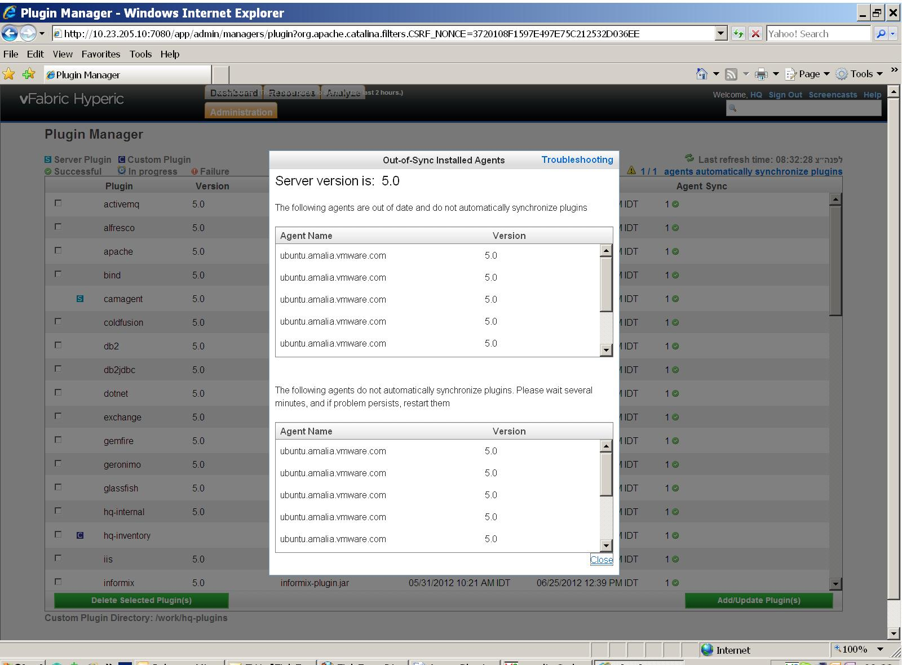

|
vFabric Hyperic 5.0 : ui-Administration.Plugin.Manager.Troubleshooting
This page last changed on Jul 10, 2012 by mmcgarry.
The Out-of-date installed Agents popup lists the name and version of each agent that is reporting to the Hyperic Server but not synchronizing plugins. There are two main reasons an agent might not sync with the server:
 |
| Document generated by Confluence on Jul 10, 2012 14:24 |